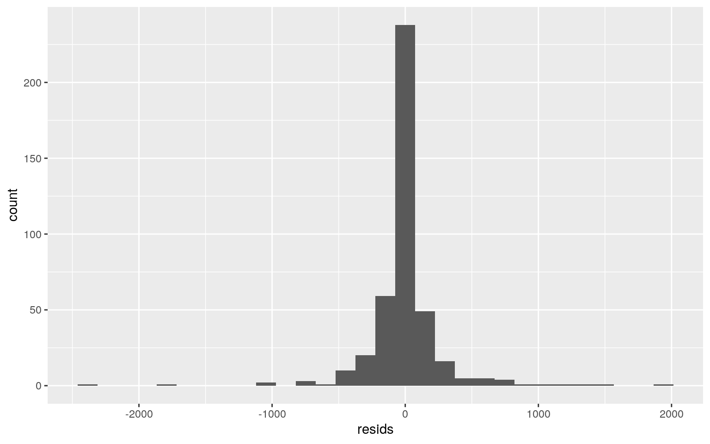

The data I chose to use is called "CASchools". This data set includes 420 observations from K-6 and K-8 districts in California and 14 variables. The variables are the following: district (district code), school (school name), county (a factor indicating county), grades (factor that indicates grade span of district), student (shows the total enrollment), teachers (number of teachers), calworks (percentage of those who qualify for income assistance), lunch (percentage of those who qualify for reduced lunch), computer (number of computers), expenditure (spending per student), income (average income for district), english (percent of English learners), read (average reading score) and math (average math score).
library(AER)
data(CASchools)
CAS <- data.frame(CASchools)
man1<-manova(cbind(read,math)~grades, data=CAS)
summary(man1)## Df Pillai approx F num Df den Df Pr(>F)
## grades 1 0.029806 6.4055 2 417 0.00182 **
## Residuals 418
## ---
## Signif. codes: 0 '***' 0.001 '**' 0.01 '*' 0.05 '.' 0.1
' ' 1summary.aov(man1)## Response read :
## Df Sum Sq Mean Sq F value Pr(>F)
## grades 1 3603 3602.5 9.0816 0.002739 **
## Residuals 418 165812 396.7
## ---
## Signif. codes: 0 '***' 0.001 '**' 0.01 '*' 0.05 '.' 0.1
' ' 1
##
## Response math :
## Df Sum Sq Mean Sq F value Pr(>F)
## grades 1 4267 4267.3 12.465 0.0004608 ***
## Residuals 418 143103 342.4
## ---
## Signif. codes: 0 '***' 0.001 '**' 0.01 '*' 0.05 '.' 0.1
' ' 1CAS%>%group_by(grades)%>%summarize(mean(read),mean(math))## # A tibble: 2 x 3
## grades `mean(read)` `mean(math)`
## <fct> <dbl> <dbl>
## 1 KK-06 662. 661.
## 2 KK-08 654. 652.pairwise.t.test(CAS$read,
CAS$grades, p.adj="none")##
## Pairwise comparisons using t tests with pooled SD
##
## data: CAS$read and CAS$grades
##
## KK-06
## KK-08 0.0027
##
## P value adjustment method: nonepairwise.t.test(CAS$math,
CAS$grades, p.adj="none")##
## Pairwise comparisons using t tests with pooled SD
##
## data: CAS$math and CAS$grades
##
## KK-06
## KK-08 0.00046
##
## P value adjustment method: nonelibrary(rstatix)
group <- CAS$grades
DVs <- CAS %>% select(read,math)
sapply(split(DVs,group), mshapiro_test)## KK-06 KK-08
## statistic 0.9891862 0.9891282
## p.value 0.8681782 0.008977046A total of 5 tests were performed; 1 MANOVA, 2 ANOVAs and 2 t-tests. The MANOVA provided significant differences among the school for at least once of numerical variables. Pillai = 0.0298, F = 6.406, and p = 0.00182. Univariate ANOVAs were performed as a follow-up and for reading scores the statistics are the following: F = 9.082 and p = 0.00274. For math, the statistics are the following: F = 12.465 and p = 0.000461. Pairwise comparisons (t-tests) were also conducted and since math and reading differed, the alpha value had to be adjusted with the Bonferroni method for controlling Type I error. Thus the alpha is 0.05/5 = 0.01 which no longer shows that everything is significant. The p-value for KK-08 was <0.5 so the main assumptions are violated.
library(vegan)
CAS %>% group_by(grades) %>% summarize(means = mean(english)) %>% summarize(mean_diff = diff(means))## # A tibble: 1 x 1
## mean_diff
## <dbl>
## 1 -2.82rand_dist <- vector()
for (i in 1:5000) {
new <- data.frame(english = sample(CAS$english), grades = CAS$grades)
rand_dist[i] <- mean(new[new$grades =="KK-06", ]$english) - mean(new[new$grades == "KK-08", ]$english)
}
{hist(rand_dist,main="",ylab=""); abline(v = c(-2.819127, 2.819127),col="red")}mean(rand_dist> 2.819127 | rand_dist < -2.819127) ## [1] 0.2738H0: The percent of english learners is the same for KK-08 and KK-06. HA: The percent of english learners is different for KK-08 and KK-06. The calculated p-value is 0.268, therefore, you would reject the H0.
CAS$teachers_c <- CAS$teachers - mean(CAS$teachers)
CAS$students_c <- CAS$students - mean(CAS$students)
fit1 <- lm(students_c ~ grades*teachers_c, data=CAS)
summary(fit1)##
## Call:
## lm(formula = students_c ~ grades * teachers_c, data =
CAS)
##
## Residuals:
## Min 1Q Median 3Q Max
## -2459.63 -64.21 11.13 55.56 1867.38
##
## Coefficients:
## Estimate Std. Error t value Pr(>|t|)
## (Intercept) -4.268e+01 3.845e+01 -1.110 0.268
## gradesKK-08 4.993e+01 4.154e+01 1.202 0.230
## teachers_c 2.077e+01 1.826e-01 113.742 <2e-16 ***
## gradesKK-08:teachers_c 4.425e-04 2.017e-01 0.002 0.998
## ---
## Signif. codes: 0 '***' 0.001 '**' 0.01 '*' 0.05 '.' 0.1
' ' 1
##
## Residual standard error: 297.5 on 416 degrees of freedom
## Multiple R-squared: 0.9943, Adjusted R-squared: 0.9942
## F-statistic: 2.402e+04 on 3 and 416 DF, p-value: <
2.2e-16coef(fit1)## (Intercept) gradesKK-08 teachers_c
gradesKK-08:teachers_c
## -4.267970e+01 4.993384e+01 2.076954e+01 4.425248e-04CAS %>% ggplot(aes(teachers_c, students_c))+geom_point()+geom_smooth(method = 'lm',se=F)cor(CAS$teachers_c, CAS$students_c)## [1] 0.9971161resids<-fit1$residuals
fitvals<-fit1$fitted.values
ggplot()+geom_point(aes(fitvals,resids))+geom_hline(yintercept=0, color='red')ggplot()+geom_histogram(aes(resids))
ggplot()+geom_qq(aes(sample=resids))+geom_qq()coeftest(fit1)[,1:2]## Estimate Std. Error
## (Intercept) -4.267970e+01 38.4510776
## gradesKK-08 4.993384e+01 41.5358332
## teachers_c 2.076954e+01 0.1826025
## gradesKK-08:teachers_c 4.425248e-04 0.2016681coeftest(fit1, vcov=vcovHC(fit1))[,1:2]## Estimate Std. Error
## (Intercept) -4.267970e+01 35.5654474
## gradesKK-08 4.993384e+01 39.6791266
## teachers_c 2.076954e+01 0.5567891
## gradesKK-08:teachers_c 4.425248e-04 0.6643997fit <- lm(students~teachers, data=CAS)
SST <- sum((CAS$students-mean(CAS$students))^2)
SST <- sum((CAS$students-mean(CAS$students))^2)
SSR <- sum((fit$fitted.values-mean(CAS$students))^2)
SSE <- sum(fit$residuals^2)
SSR/SST## [1] 0.9942404The coefficient was positive, so this would indicate that the when the teacher variable (x-axis) increases, the mean of the students variable (y-axis) will also increase. A ggplot was created to show the interactions between the two variables that have had their mean centered according to the rubric. Homoskedasticity, normality and linearity was violated. There were large residuals seen, so I tested for robust SEs. The corrected SEs robust to the violations of homoskedasticity. The standard errors for the robust differ fron the non-robust. My model explains 99.42% of the variation outcome.
samp_distn<-replicate(5000, {
boot_dat<-boot_dat<-CAS[sample(nrow(CAS),replace=TRUE),]
fit<-lm(students_c ~ grades*teachers_c, data=boot_dat)
coef(fit)
})
samp_distn%>%t%>%as.data.frame%>%summarize_all(sd)## (Intercept) gradesKK-08 teachers_c
gradesKK-08:teachers_c
## 1 34.34544 38.65672 0.4447987 0.5478004The standard error for the bootstrap is the highest, then original and robust has the smallest SE values. The p-value for the bootstrap is bigger than the original SE p-value and robust SE p-value.
library(tidyverse)
library(lmtest)
library(plotROC)
data <- CAS%>%mutate(y=ifelse(grades=="KK-08",1,0))
head(data)## district school county grades students teachers calworks
lunch
## 1 75119 Sunol Glen Unified Alameda KK-08 195 10.90
0.5102 2.0408
## 2 61499 Manzanita Elementary Butte KK-08 240 11.15
15.4167 47.9167
## 3 61549 Thermalito Union Elementary Butte KK-08 1550
82.90 55.0323 76.3226
## 4 61457 Golden Feather Union Elementary Butte KK-08 243
14.00 36.4754 77.0492
## 5 61523 Palermo Union Elementary Butte KK-08 1335 71.50
33.1086 78.4270
## 6 62042 Burrel Union Elementary Fresno KK-08 137 6.40
12.3188 86.9565
## computer expenditure income english read math teachers_c
students_c y
## 1 67 6384.911 22.690001 0.000000 691.6 690.0 -118.16738
-2433.793 1
## 2 101 5099.381 9.824000 4.583333 660.5 661.9 -117.91738
-2388.793 1
## 3 169 5501.955 8.978000 30.000002 636.3 650.9 -46.16737
-1078.793 1
## 4 85 7101.831 8.978000 0.000000 651.9 643.5 -115.06738
-2385.793 1
## 5 171 5235.988 9.080333 13.857677 641.8 639.9 -57.56738
-1293.793 1
## 6 25 5580.147 10.415000 12.408759 605.7 605.4 -122.66738
-2491.793 1fit2<-glm(y~english,data=data,,family=binomial(link="logit"))
coeftest(fit2)##
## z test of coefficients:
##
## Estimate Std. Error z value Pr(>|z|)
## (Intercept) 1.9044241 0.1871888 10.1738 <2e-16 ***
## english -0.0078927 0.0071067 -1.1106 0.2667
## ---
## Signif. codes: 0 '***' 0.001 '**' 0.01 '*' 0.05 '.' 0.1
' ' 1exp(coef(fit))## (Intercept) teachers
## 6.029519e-23 1.041580e+09#For students=0, log odds is 1.904, so e^1.904 = 6.7127
#For students=1, log odds is 1.904 + -0.0079 so e^1.899 = 6.679
logistic<-function(x){exp(x)/(1+exp(x))}
#confusion matrix
table(truth=data$grades, prediction=data$english>1)%>%addmargins## prediction
## truth FALSE TRUE Sum
## KK-06 5 56 61
## KK-08 78 281 359
## Sum 83 337 420#accuracy
(56+281)/420## [1] 0.802381#TNR specificity
281/359## [1] 0.7827298#TPR sensitivity
56/61## [1] 0.9180328#PPV precision
56/337## [1] 0.1661721#AUC
widths<-diff(data$y)
heights<-vector()
for(i in 1:100) heights[i]<-data$y[i]+data$y[i+1]
AUC<-sum(heights*widths/2)
AUC%>%round(3)## [1] 0.5#density plot
CAS$logit<-predict(fit2,type="link")
CAS%>%ggplot()+geom_density(aes(logit,color=grades,fill=grades), alpha=.4)+
theme(legend.position=c(.3,.6))+geom_vline(xintercept=2)+xlab("logit (log-odds)") +
geom_rug(aes(logit,color=grades))#ROC
library(plotROC)
ROCplot<-ggplot(data)+geom_roc(aes(d=y,m=english), n.cuts=0)
ROCplot calc_auc(ROCplot)## PANEL group AUC
## 1 1 -1 0.41664The coefficient intercept estimate is 1.904. When increasing 1 english percent, it multiplies the odds by a factor of 6.679. A confusion matrix table was computed to calculate accuracy (0.802), sensitivity (0.918), specificity (0.783) and precision (0.166). The AUC that was calculated is 0.5, which is considered a bad AUC. A density plot was also generated to visualise accuracy, sensitivity, specificity and precision. An ROC curve was also generated and AUC was calculated from the ROC, AUC = 0.417.
#fit model
library(tidyverse)
library(lmtest)
library(pROC)
library(glmnet)
class_diag<-function(probs,truth){
tab<-table(factor(probs>.5,levels=c("FALSE","TRUE")),truth)
acc=sum(diag(tab))/sum(tab)
sens=tab[2,2]/colSums(tab)[2]
spec=tab[1,1]/colSums(tab)[1]
ppv=tab[2,2]/rowSums(tab)[2]
if(is.numeric(truth)==FALSE & is.logical(truth)==FALSE) truth<-as.numeric(truth)-1
ord<-order(probs, decreasing=TRUE)
probs <- probs[ord]; truth <- truth[ord]
TPR=cumsum(truth)/max(1,sum(truth))
FPR=cumsum(!truth)/max(1,sum(!truth))
dup<-c(probs[-1]>=probs[-length(probs)], FALSE)
TPR<-c(0,TPR[!dup],1); FPR<-c(0,FPR[!dup],1)
n <- length(TPR)
auc<- sum( ((TPR[-1]+TPR[-n])/2) * (FPR[-1]-FPR[-n]) )
data.frame(acc,sens,spec,ppv,auc)
}
k=10
data1<-data[sample(nrow(data)),]
folds<-cut(seq(1:nrow(data)),breaks=k,labels=F)
diags<-NULL
for(i in 1:k){
train<-data1[folds!=i,]
test<-data1[folds==i,]
truth<-test$y
fit<-glm(y~english,data=data,family="binomial")
probs<-predict(fit,newdata = test,type="response")
diags<-rbind(diags,class_diag(probs,truth))
}
summarize_all(diags,mean)## acc sens spec ppv auc
## 1 0.8547619 1 0 0.8547619 0.6036831#10-fold
k=10
data <- CAS %>% sample_frac
data$binary<-ifelse(data$grades=="KK-08",1,0)
folds <- ntile(1:nrow(data),n=10)
diags<-NULL
for(i in 1:k){
train <- data[folds!=i,]
test <- data[folds==i,]
truth <- test$binary
fit <- glm(binary~read+math+english+calworks+students+teachers+income+computer+expenditure,
data=train, family="binomial")
probs <- predict(fit, newdata=test, type="response")
diags<-rbind(diags,class_diag(probs,truth))
}
diags%>%summarize_all(mean)## acc sens spec ppv auc
## 1 0.8380952 0.975095 0.03 0.8557985 0.7187084#LASSO
data$binary<-ifelse(data$grades=="KK-08",1,0)
y<-as.matrix(data$binary)
x<-model.matrix(binary~read+math+english+calworks+students+teachers+income+computer+expenditure,data=data)[,-1]
head(x)## read math english calworks students teachers income
computer expenditure
## 99 630.4 646.2 39.399998 18.8000 500 22.43 10.26400 70
5221.461
## 173 651.3 648.1 6.405847 17.9751 2326 117.80 11.42600
345 5149.187
## 393 684.5 682.3 0.000000 3.9924 526 28.02 13.56700 33
5644.286
## 143 642.9 647.3 43.750000 12.3990 8416 391.42 12.66990
1333 5065.911
## 276 661.7 663.4 9.640718 5.2989 5010 239.40 19.82313 576
4802.153
## 71 631.8 636.6 5.485232 19.8312 237 11.00 7.30500 13
4845.680x<-scale(x)
head(x)## read math english calworks students teachers income
computer
## 99 -1.2219255 -0.3808536 1.2923513 0.48485765
-0.54401629 -0.56748366 -0.6992340 -0.52880466
## 173 -0.1825389 -0.2795450 -0.5119953 0.41284433
-0.07737918 -0.05996069 -0.5384234 0.09429588
## 393 1.4685475 1.5440470 -0.8623109 -0.80783818
-0.53737195 -0.53773580 -0.2421276 -0.61264000
## 143 -0.6002817 -0.3222014 1.5302393 -0.07394629
1.47892969 1.39614122 -0.3662785 2.33292618
## 276 0.3346699 0.5362748 -0.3350903 -0.69378138
0.60852115 0.58714834 0.6236654 0.61770033
## 71 -1.1523032 -0.8927409 -0.5623408 0.57488092
-0.61122634 -0.62830979 -1.1087338 -0.65795640
## expenditure
## 99 -0.1434631
## 173 -0.2574720
## 393 0.5235198
## 143 -0.3888342
## 276 -0.8048981
## 71 -0.7362361cv<-cv.glmnet(x,y,family="binomial")
lasso<-glmnet(x,y,family="binomial",lambda=cv$lambda.1se)
coef(lasso)## 10 x 1 sparse Matrix of class "dgCMatrix"
## s0
## (Intercept) 1.80025286
## read .
## math -0.19995443
## english -0.02879731
## calworks .
## students .
## teachers .
## income .
## computer .
## expenditure -0.18055190#10-fold CV
k=10
data <- CAS %>% sample_frac
folds <- ntile(1:nrow(data),n=10)
data$binary<-ifelse(data$grades=="KK-08",1,0)
diags<-NULL
for(i in 1:k){
train <- data[folds!=i,]
test <- data[folds==i,]
truth <- test$binary
fit <- glm(binary~math+expenditure+english,
data=train, family="binomial")
probs <- predict(fit, newdata=test, type="response")
diags<-rbind(diags,class_diag(probs,truth))
}
diags%>%summarize_all(mean)## acc sens spec ppv auc
## 1 0.847619 0.9829034 0.05666667 0.8590197 0.7500011The accuracy of the fit model is 0.855, sensitivity is 1, specificity = 0, percision is 0.855 and the AUC is 0.581. The When the 10-fold CV was performed, accuracy = 0.845, sensitivity = 0.984, specificity = 0.054 and percision = 0.857. The AUC was 0.742 which is relatively similar to the average value of the diagnostics. LASSO was performed on the binary variable and all the other variables and the variables that were retained for the 10-fold CV are math and expenditure. The AUC when the 10-fold cross validation was performed is 0.668. From comparing the two models, it did not show the same AUC value. There was an increase in AUC so that does not indicate a lot of overfitting.